Práctica 3.1: Instalación de Tomcat y Maven para despliegue de aplicación Java
Instalación de Tomcat
En primer lugar para la realización de la práctica instalaremos Tomcat en nuestra máquina virtual.
Con el siguiente comando instalaremos java 11, que nos será indispensable:
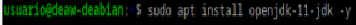
Y con este otro instalaremos Tomcat9:
Configuramos el programa y lo arrancamos con los siguientes comandos:
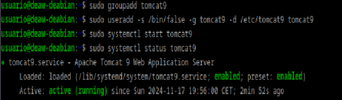
Una vez hecho esto, deberemos modificar el archivo tomcat-users.xml de la siguiente forma:
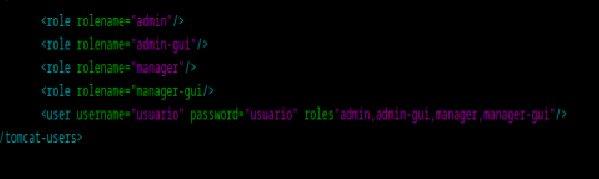
Con lo cual estamos creando nuestro usuario con su respectiva contraseña y con los privilegios enumerados con las etiquetas role. Si en el navegador nos dirigimos a http://localhost:8080/ veremos el siguiente mensaje si todo se ha realizado correctamente:
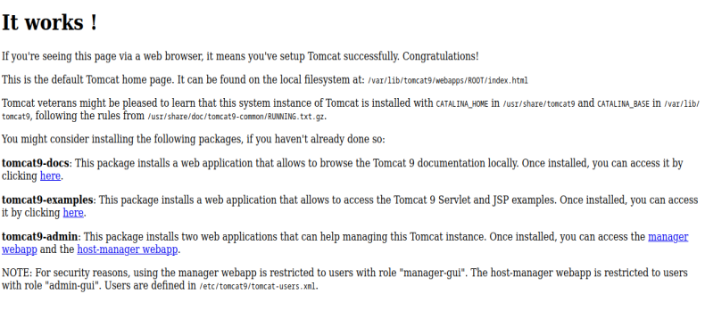
Ahora nos dirigiremos a http://localhost:8080/manager/html despúes de haber instalado en nuestra máquina tomcat9-admin y veremos lo siguiente:
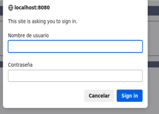
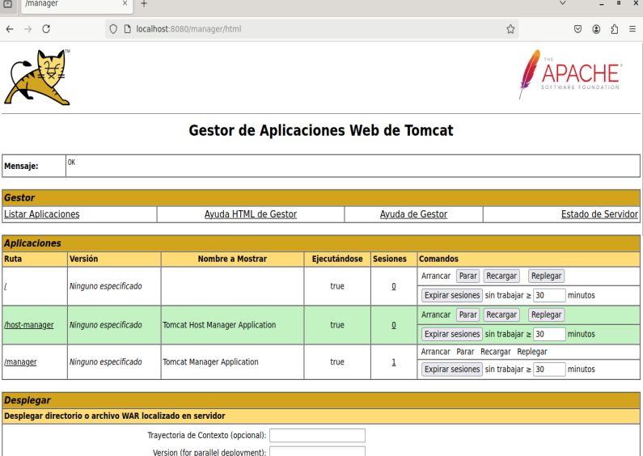
Y si accedemos a http://localhost:8080/host-manager/html, entraremos a la siguiente sección:
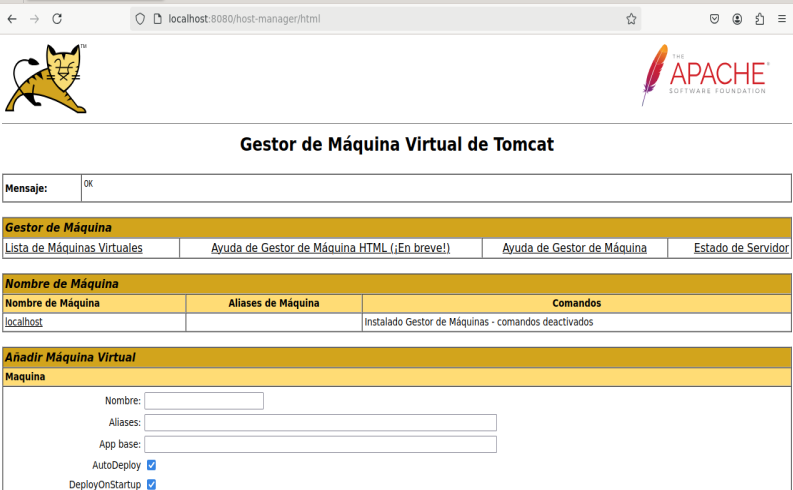
Y hasta aquí estaría realizada la isntalación.
Despliegue manual mediante la GUI de administración
Para este paso volveremos a localhost:8080/manager, donde nos dirigiremos a la siguiente sección, donde introduciremos el archivo .war que hemos descargado previamente, de forma manual:
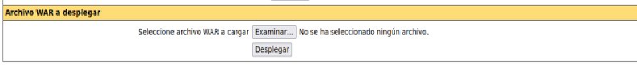
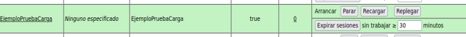
Y para comprobar que está funcionando correctamente, nos vamos a http://localhost:8080/EjemploPruebaCarga, y comprobaremos que efectivamente se ha desplegado correctamente.
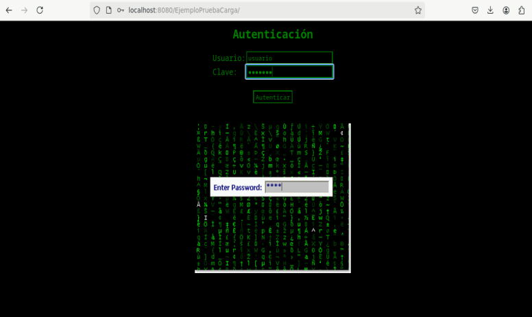
Despliegue con Maven
Antes de comenzar advertir que esta parte no he sido capaz de ponerla en funcionamiento debido a un error que no he sabido a fecha de la realización de esta práctica como resolver, y que llegado el momento mostrare. Dicho esto, como siempre instalaremos el programa pertinente, en este caso Maven:
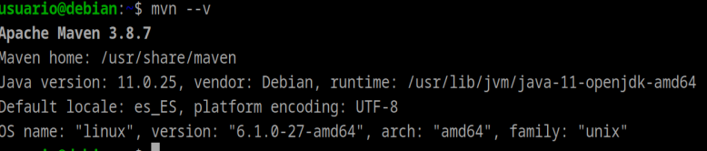
Una vez instalado, volveremos al archivo de usuarios de tomcat y añadiremos un nuevo usuario que sera el administrador del script, ya que por temas de seguridad un mismo usuario no deberia tener todos los roles simultaneamente.
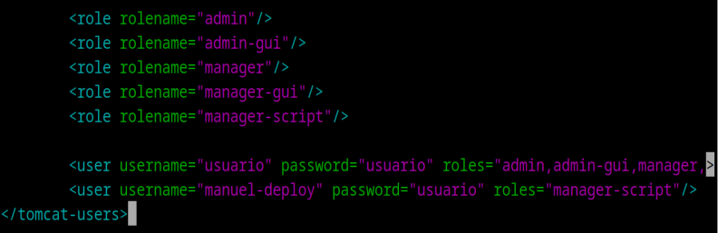
A continuación nos dirigiremos al archivo de configuración de Maven, y añadiremos las siguientes líneas, en las cuales username y password serán correspondientes a este último usuario creado.
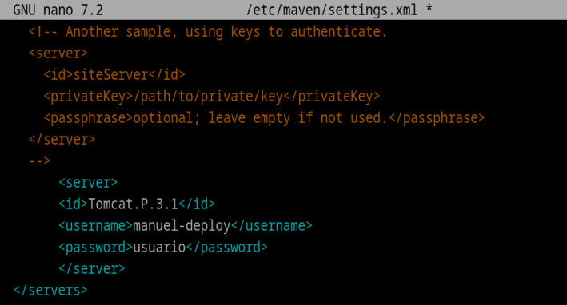
Ejecutamos el siguiente comando para crear un proyecto que usaremos de prueba:
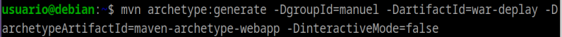
Y modificaremos el archivo pom.xml de la siguiente forma:
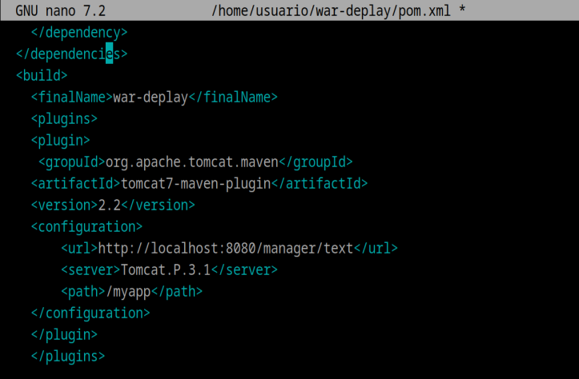
A partir de aquí al intentar desplegar tomcat7 con maven me da el siguiente error, el cual no he podido solucionar y me incapacita para terminar la práctica:
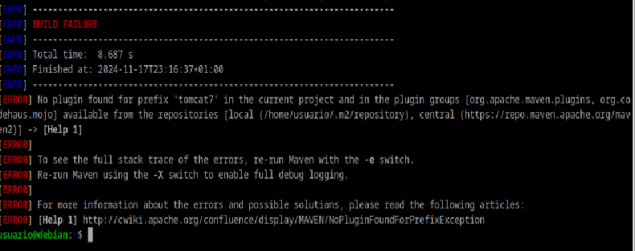